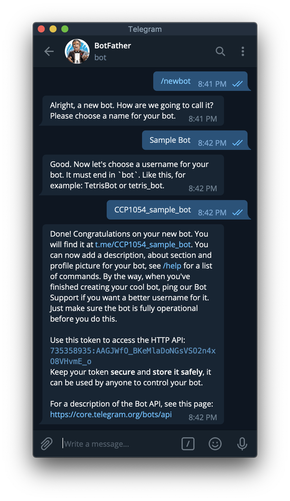
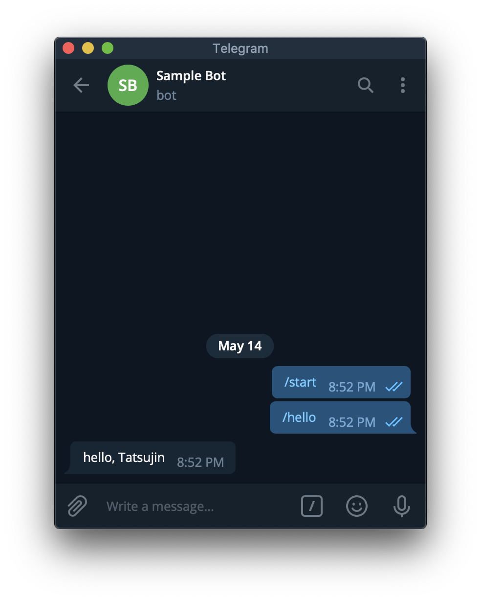
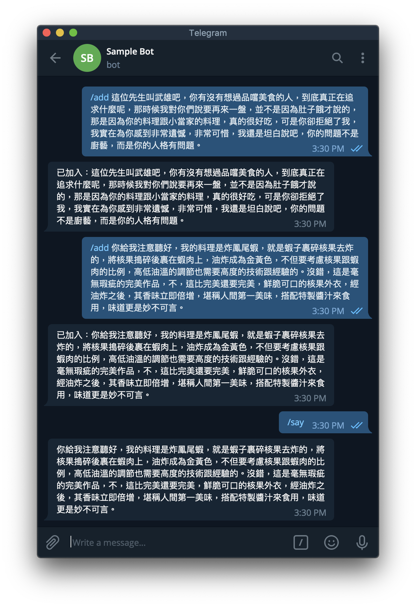
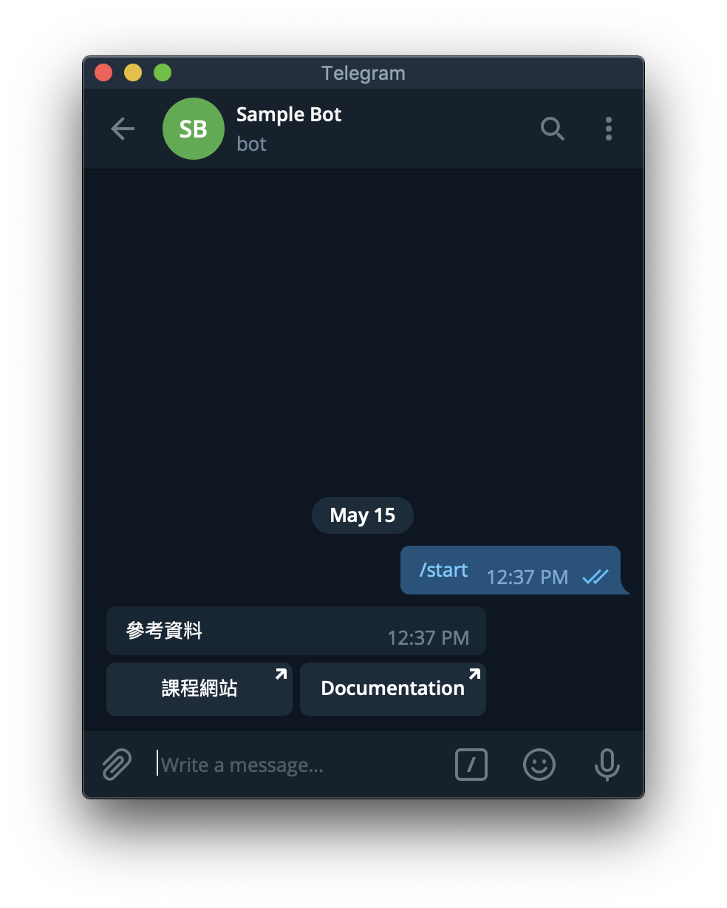
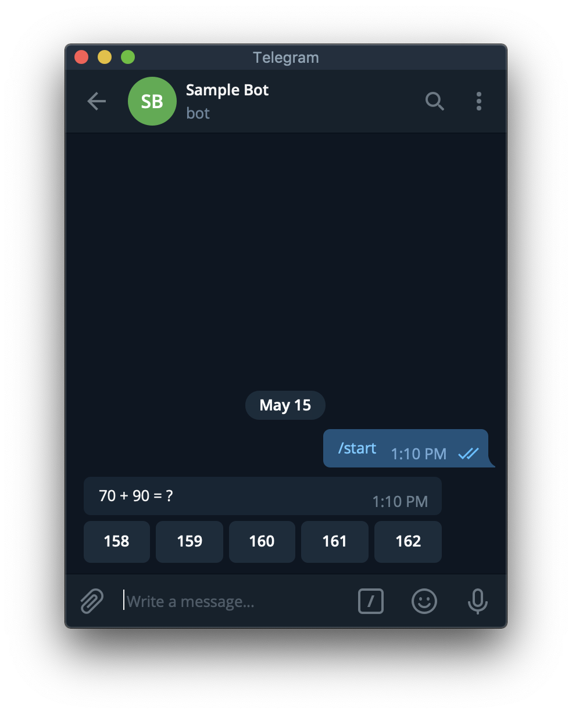
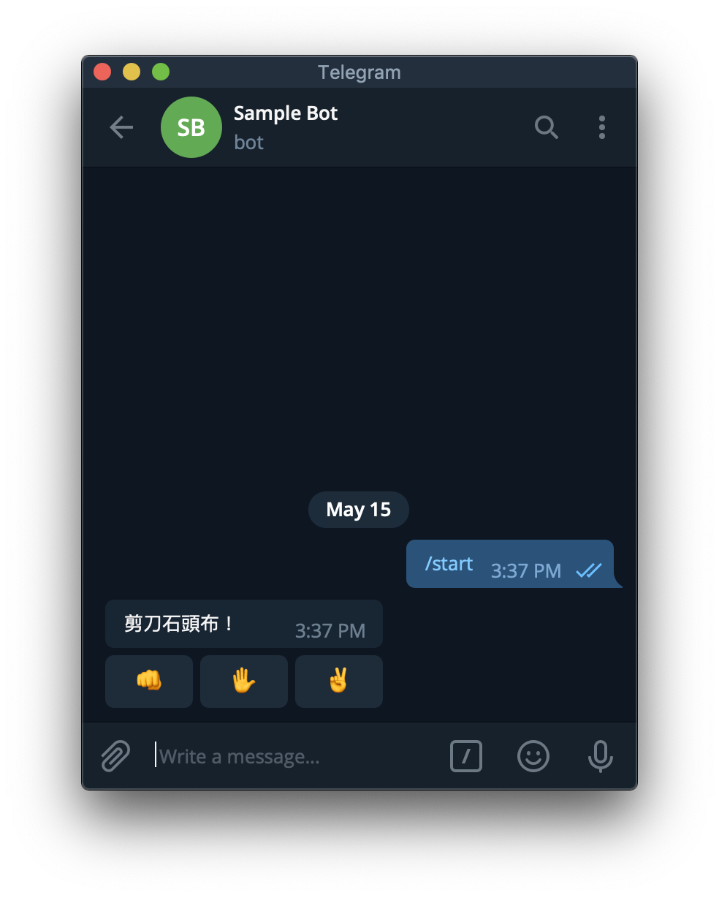
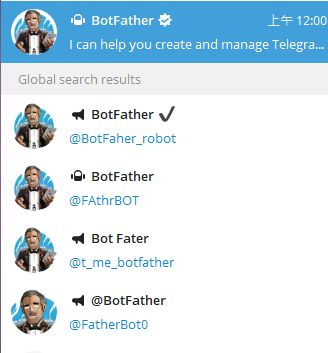
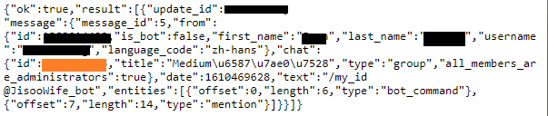
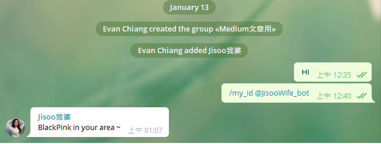

Python Telegram Bot
https://hackmd.io/@truckski/HkgaMUc24?type=view
找 @BotFather 申請一個 Bot。
- /newbot
- 輸入名稱
- 輸入 username
- 記下 token

hello, world
執行這個程式，注意 'YOUR TOKEN HERE' 的地方請填入前面得到的 Token。
from telegram.ext import Updater, CommandHandler
def hello(bot, update):
update.message.reply_text(
'hello, {}'.format(update.message.from_user.first_name))
updater = Updater('YOUR TOKEN HERE')
updater.dispatcher.add_handler(CommandHandler('hello', hello))
updater.start_polling()
updater.idle()
用 Bot 的 username 或是 BotFather 給的連結可以找到前面建立的 Bot。
對它輸入 /hello。

Command Handler 可從 update 獲得的資訊
- update
- update_id
- message
- message_id
- from_user：發訊人
- id
- first_name
- last_name
- full_name
- username
- chat：訊息所在的聊天室
- id
- type
- text：訊息內容
傳訊息
- bot.send_message(chat_id, text)
- update.message.reply_text(text)：Shortcut for
bot.send_message(update.message.chat_id, text)
範例 - 語錄 Bot
import random, os
from telegram.ext import Updater, CommandHandler
# 把語錄檔案載入
if os.path.exists('sentences.txt'):
with open('sentences.txt') as FILE:
sentences = [sentence.strip() for sentence in FILE]
else:
sentences = []
def add(bot, update):
print('from user:', update.message.from_user.id)
# 限制只有特定人才能新增語錄
# if update.message.from_user.id == YOUR_USER_ID_HERE:
if True:
sentence = update.message.text[5:].replace('\n', ' ')
sentences.append(sentence)
with open('sentences.txt', 'a') as FILE:
print(sentence, file=FILE)
update.message.reply_text('已加入：' + sentence)
def say(bot, update):
if sentences:
update.message.reply_text(random.choice(sentences))
else:
update.message.reply_text('I have no words.')
updater = Updater('YOUR TOKEN HERE')
updater.dispatcher.add_handler(CommandHandler('add', add))
updater.dispatcher.add_handler(CommandHandler('say', say))
updater.start_polling()
updater.idle()

互動按鈕
send_message 加上 reply_markup = InlineKeyboardMarkup(...) 就會在該訊息附上按鈕。
from telegram.ext import Updater, CommandHandler
from telegram import InlineKeyboardMarkup, InlineKeyboardButton
def start:
bot.send_message(chat_id, '參考資料',
reply_markup = InlineKeyboardMarkup([[
InlineKeyboardButton('課程網站', url = 'https://github.com/mzshieh/pa19spring'),
InlineKeyboardButton('Documentation', url = 'https://python-telegram-bot.readthedocs.io/en/stable/index.html')]]))
# ...

除了 url 以外，也可以用 callback_data 來讓 Bot 知道哪個按鈕被按了。
from random import randint
from telegram.ext import Updater, CommandHandler, CallbackQueryHandler
from telegram import InlineKeyboardMarkup, InlineKeyboardButton
def start(bot, update):
a, b = randint(1, 100), randint(1, 100)
update.message.reply_text('{} + {} = ?'.format(a, b),
reply_markup = InlineKeyboardMarkup([[
InlineKeyboardButton(str(s), callback_data = '{} {} {}'.format(a, b, s)) for s in range(a + b - randint(1, 3), a + b + randint(1, 3))
]]))
def answer(bot, update):
a, b, s = [int(x) for x in update.callback_query.data.split()]
if a + b == s:
update.callback_query.edit_message_text('你答對了！')
else:
update.callback_query.edit_message_text('你答錯囉！')
updater = Updater('YOUR TOKEN HERE')
updater.dispatcher.add_handler(CommandHandler('start', start))
updater.dispatcher.add_handler(CallbackQueryHandler(answer))
updater.start_polling()
updater.idle()


Callback Query Handler 可從 update 獲得的資訊
- update
- update_id
- callback_query
- from_user
- 略
- message：按鈕依附的 message
- 略
- data：建立 InlineKeyboardButton 時傳入的 callback_data
- from_user
回應 Callback Query
- bot
- answer_callback_query(callback_query_id, text)：會顯示文字在畫面中間。
- edit_message_text(chat_id = string, message_id = string, text)：修改文字，會同時清除按鈕。
- update.callback_query
- answer(text)：Shortcut for
bot.answer_callback_query(update.callback_query.id, text) - edit_message_text(text)：Shortcut for
bot.edit_message_text(chat_id=update.callback_query.message.chat_id, message_id=update.callback_query.message.message_id, text
- answer(text)：Shortcut for
範例 - 剪刀石頭布
import random
from telegram.ext import Updater, CommandHandler, CallbackQueryHandler
from telegram import InlineKeyboardMarkup, InlineKeyboardButton
hands = ['rock', 'paper', 'scissors']
emoji = {
'rock': '👊',
'paper': '✋',
'scissors': '✌️'
}
def start(bot, update):
update.message.reply_text('剪刀石頭布！',
reply_markup = InlineKeyboardMarkup([[
InlineKeyboardButton(emoji, callback_data = hand) for hand, emoji in emoji.items()
]]))
def judge(mine, yours):
if mine == yours:
return '平手'
elif (hands.index(mine) - hands.index(yours)) % 3 == 1:
return '我贏了'
else:
return '我輸了'
def play(bot, update):
try:
mine = random.choice(hands)
yours = update.callback_query.data
update.callback_query.edit_message_text('我出{}，你出{}，{}！'.format(emoji[mine], emoji[yours], judge(mine, yours)))
except Exception as e:
print(e)
updater = Updater('YOUR TOKEN HERE')
updater.dispatcher.add_handler(CommandHandler('start', start))
updater.dispatcher.add_handler(CallbackQueryHandler(play))
updater.start_polling()
updater.idle()


Reference
https://python-telegram-bot.readthedocs.io/en/stable/index.html
使用Python寫一個Telegram Notify
第一步: 建立你的Bot名稱與代號

在 Telegram 世界中，管理Bot的叫做 BotFather，請認明第一位有藍勾勾的官方Bot。不要選到下面奇怪的 Bot Fater了XD
跟他對話之後，基本上跟他說聲Hi，他就會吐出
"I can help you create and manage Telegram bots. If you’re new to the Bot API, please see the manual… "
接下來，請輸入 */newbot* 以創建新的Bot。接著幫她建立名稱跟她專屬的ID。

黑色的部分為你這個Bot的Token，類似金鑰
第二步: 建立群組，並將你的Bot加入群組
不過Telegram在創建群組上，至少要先加入一個真人，所以你可以加一位好友進去，然後再加入你剛剛創建的Bot，最後再跟你朋友說聲Goodbye把她Remove掉。
第三步: 取得你的ChatID
前往網址 https://api.telegram.org/bot{your bot token}/getUpdates
而{your bot token} 就是填入Bot Father賦予你的Bot Token(不用加括號)
如果成功前往，應該會看到像是 *{“ok”:true,”result”:[]}* 的資訊。 這時候，前往你的群組輸入 */my_id @你的BotID*，接著再次重新整理網頁。就會看到以下的資訊。

橘色部分為你的Chat ID
好了，現在有Token，也有ChatID，終於可以開始進入程式部分
第四步: 用 Python發送Message
接者使用request.get的方式，去API上通知BOT發送訊息。 而因為可能每次Bot要打出去的訊息不同，所以將這個功能模組化，以下為範例參考。

結語
以上就是利用簡單的範例來瞭解如何創建一個簡易的Telegram Notify。 應用範圍可以用來推播日常工作排程上的Error Bug或搭配Timer傳送你寫的爬蟲資料，是不是非常好用呢! (而且必要的程式碼也是非常少呢)
如果還有興趣開發功能更強大的Bot，我把連結放在下方，大家就參考看看囉!
import os
import telebot
import requests
from loguru import logger
TELEGRAM_BOT_TOKEN = os.environ.get("TELEGRAM_BOT_TOKEN")
bot = telebot.TeleBot(TELEGRAM_BOT_TOKEN)
def get_daily_horoscope(sign: str, day: str) -> dict:
"""通過特定的星座獲取運勢。
關鍵字解釋:
sign:str - 星座
day:str - 格式化的日期 (YYYY-MM-DD) 或 TODAY 或 TOMORROW 或 YESTERDAY
Return:dict - JSON data
"""
url = "https://horoscope-app-api.vercel.app/api/v1/get-horoscope/daily"
params = {"sign": sign, "day": day}
response = requests.get(url, params)
return response.json()
@bot.message_handler(commands=["start", "hello"])
def send_welcome(message):
bot.reply_to(message, "Howdy, how are you doing?")
@bot.message_handler(commands=["horoscope"])
def sign_handler(message):
text = "What's your zodiac sign?\nChoose one: *Aries*, *Taurus*, *Gemini*, *Cancer,* *Leo*, *Virgo*, *Libra*, *Scorpio*, *Sagittarius*, *Capricorn*, *Aquarius*, and *Pisces*."
sent_msg = bot.send_message(message.chat.id, text, parse_mode="Markdown")
bot.register_next_step_handler(sent_msg, day_handler)
def day_handler(message):
sign = message.text
text = "What day do you want to know?\nChoose one: *TODAY*, *TOMORROW*, *YESTERDAY*, or a date in format YYYY-MM-DD."
sent_msg = bot.send_message(message.chat.id, text, parse_mode="Markdown")
bot.register_next_step_handler(sent_msg, fetch_horoscope, sign.capitalize())
def fetch_horoscope(message, sign):
day = message.text
horoscope = get_daily_horoscope(sign, day)
data = horoscope["data"]
horoscope_message = (
f'*Horoscope:* {data["horoscope_data"]}\n*Sign:* {sign}\n*Day:* {data["date"]}'
)
bot.send_message(message.chat.id, "Here's your horoscope!")
bot.send_message(message.chat.id, horoscope_message, parse_mode="Markdown")
@bot.message_handler(func=lambda msg: True)
def echo_all(message):
print(message, message.text)
bot.reply_to(message, message.text)
try:
bot.infinity_polling()
except Exception as e:
logger.exception(e)